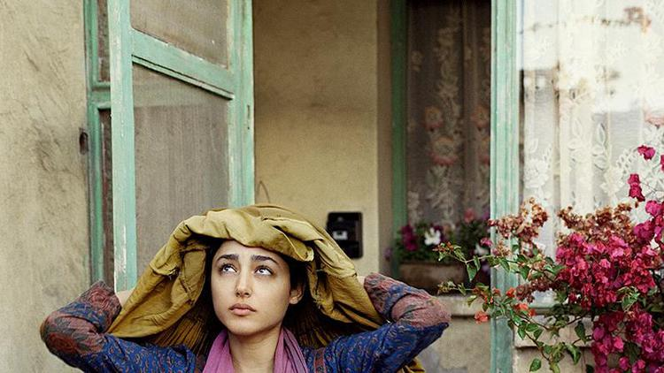

La Rupture
De nombreuses personnes accordent beaucoup de respect à Rahimi pour avoir donné de la voix à une héroïne sans nom. En effet, Rahimi la présente comme la voix de millions de femmes qui se sont vues marginalisées, battues, ridiculisées mais surtout réduites au silence.
L’histoire prend place dans un contexte post onze Septembre. C’est dans ce contexte que l’auteur nous raconte l’histoire de cette femme qui, au premier abord et, aux vues de son origine,semblerait banale. Kaboul,bombardé. Pendant que la guerre fait rage, une femme, mère de famille veille sur son mari se trouvant dans le coma. Plus le temps passe et plus la femme perd espoir de voir un jour son mari se réveiller.
“Je ne sais pas ce qui m’arrive. Mes forces défaillent de jour en jour”
On la découvre alors découragée. Elle ajoute d’ailleurs “Comme ma foi “. On observe un début de rupture de la femme avec ce qu’elle a toujours été auparavant et ce que les femmes de sa communauté sont supposées être. Dans les citations rapportées plus haut, l’auteur nous transmet la détresse de son personnage. Cette première partie met en partie en avant la condition des femmes en Afghanistan dans la mesure où ces dernières n’existent qu’à travers leurs maris. Dans le film on voit l’actrice Farahani Golshifteh s’adosse à de nombreuses reprises sur le mur et couvre son front avec ses mains comme décrit dans le livre. Contrainte de quitter son mari pour se réfugier avec ses enfants dans la maison close de sa tante. Elle se voit revenir au chevet de son mari condamné au silence dans un coma profond.